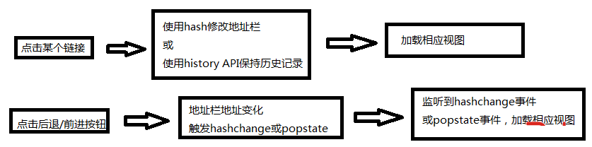

AngularJs跟jQuery的不同和联系
AngularJS is an MV* framework that is ideal for use when building client-side single-page apps. It is not a library, but a framework for building dynamic web pages. It focuses on extending HTML and providing dynamic data binding, and it plays well with other frameworks (e.g., jQuery).
为了实现无刷新的视图切换，我们通常会用ajax请求从后台取数据，然后套上HTML模板渲染在页面上。 然而ajax的一个致命缺点就是导致浏览器后退按钮失效，尽管我们可以在页面上放一个大大的返回按钮，让用户点击返回来导航，但总是无法避免用户习惯性的点后退。
解决此问题的一个方法是使用hash，监听hashchange事件来进行视图切换：
<a href="#sharpxiajun">Click Me</a>
这个链接前面的#sharpxiajun就是url的hash，url的hash是不会发送给服务端的，
在浏览器里有专门的window事件hashchange可以监听到它，浏览器的前进与后退支持url的hash改变，
因此我们可以通过改变url的hash再加上ajax请求就可以模拟页面的同步提交了，同时该请求是可以使用浏览器的前进和后退操作。
另一个方法是用HTML5的history API，通过pushState()记录操作历史，监听popstate事件来进行视图切换，也有人把这叫pjax技术。
基本流程如下：
如此一来，便形成了通过地址栏进行导航的深度链接（deeplinking ），也就是我们所需要的路由机制。通过路由机制，一个单页应用的各个视图就可以很好的组织起来了。